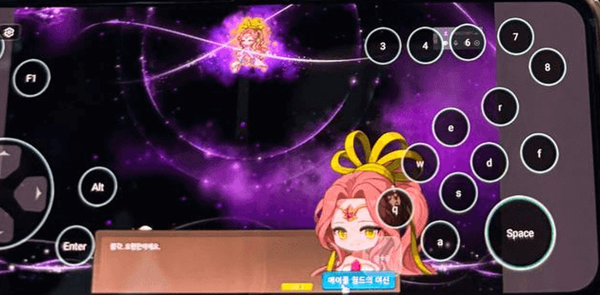
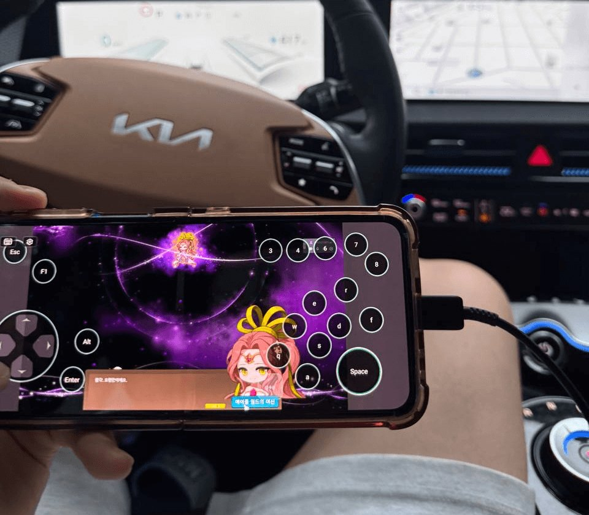
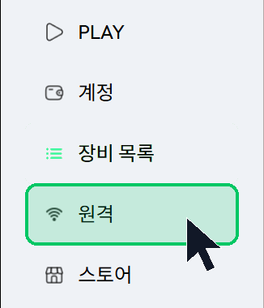
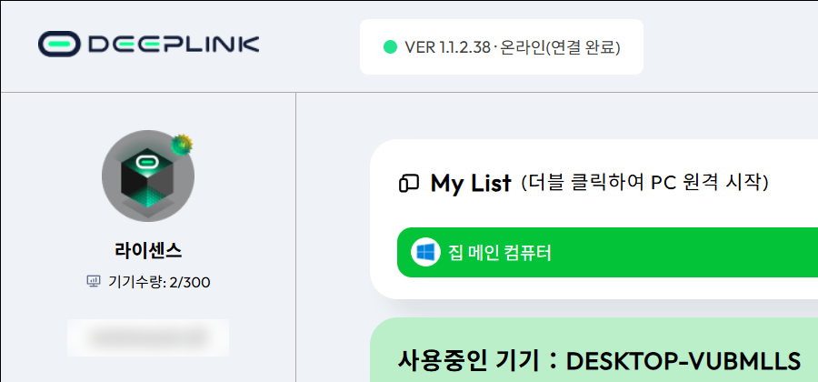
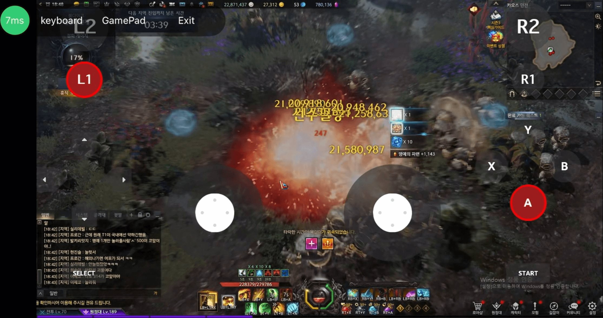

원격에 특화된 고성능 원격 제어 프로그램
내 PC를,
폰 하나로.
업무 · 작업 · 모델링 · 게임까지.
어떤 고사양 작업도 내 PC 성능 그대로, 폰에서 무리 없이.
01 · 업무
회사 PC가
주머니 속으로.
보고서, 엑셀, 사내 프로그램. 출근 전에도, 출장 중에도 내 PC를 그대로 열어 쓰세요.
02 · 작업
편집도 렌더링도
밖에서 확인.
무거운 작업은 PC가 하고, 폰으로는 보고 고치기만. 렌더링 걸어두고 나가도 진행 상황을 바로 봅니다.
03 · 모델링
고사양 툴을
가볍게.
Photoshop, ZBrush, Unity처럼 GPU를 쓰는 툴도 계산은 PC가. 폰에는 화면만 옵니다. 태블릿 펜과 게임패드도 그대로.
04 · 게임
게임까지,
끊김 없이.
가장 까다로운 원격 작업, 게임도 지연 없이. 터치 키보드와 게임패드 버튼으로 PC 게임을 폰에서 그대로 즐기세요.
원격인데,
내 PC 앞에 앉은 것처럼
원격 하나에만 집중해서 만든 성능. 일반 원격 프로그램과는 화면부터 다릅니다.
5ms
LAN 지연 5ms 미만
도시 간 10ms · 장거리 30ms 미만
240Hz
4K 고주사율
빠른 게임도 프레임 그대로
4:4:4
무손실 색상
10.7억 색상 · 글자와 색 번짐 없이
10MB
가벼운 설치
안내대로 따라 하면 설정 끝
같은 PC, 같은 회선.
TeamViewer보다 빠르게.
직접 비교 테스트한 결과입니다.
입력 지연낮을수록 좋음
평균 프레임높을수록 좋음
화질 (PSNR)높을수록 좋음
테스트 조건: 회선 · PC 사양 · 해상도 · 측정일 기재 예정
왼쪽 DeepLink, 오른쪽 TeamViewer
와이파이가 흔들려도
화면은 그대로.
패킷 손실 5%, 네트워크 지연 100ms 환경에서도 높은 프레임을 유지합니다. 지하철, 카페, 해외 숙소 와이파이에서도.
- FEC 손실 복구잃어버린 데이터를 다시 받지 않고 복원
- 대역폭 예측속도가 떨어지기 전에 미리 조절
- SVC 인코딩회선에 맞춰 화질 단계를 바로 전환
- 스마트 경로 선택가장 빠른 길로 연결
- P2P · IPv6최대 95% NAT 통과, 서버를 거치지 않음
- 프레임 적응화면 움직임에 맞춰 프레임 조절
네트워크 지연이 튀어도
설명용 그래프입니다.
조작은 내 손에 맞게
화면 터치가 곧 마우스. 키보드 버튼과 게임패드 중에 골라 쓰세요.

실제 DeepLink 원격 화면 · 안드로이드
-
터치 = 마우스
누르면 클릭, 끌면 드래그
-
외부 장치 지원
태블릿 펜, 게임패드, 게이밍 키보드 · 마우스
-
게임 드라이버
원격 입력이 막힌 게임도 플레이
PC는 집에,
나는 어디든
이동 중 · 회사 · 학교 · 군 복무 · 해외

이동 중
잠깐 비는 시간에도
내 PC 그대로
업무
카페에서 회사 PC 열기
작업
퇴근길에
렌더링 확인
모델링
태블릿으로
스컬핑
가진 기기 그대로
PC에 설치해 두고, 폰 · 태블릿 · 다른 PC에서 접속하세요.
원격으로 켤 PC
Windows PC
집이나 회사 PC에 DeepLink를 설치하고 로그인해 두면 준비 끝.
접속하는 기기
안드로이드
전용 앱으로 접속. 키보드 · 게임패드 버튼을 화면에 띄워 조작합니다.
접속하는 기기
아이폰 · 아이패드
설치 없이 Chrome 브라우저에서 웹으로 바로 접속.
접속하는 기기
노트북 · 다른 PC
저사양 노트북에서도 고사양 PC의 성능 그대로.
내 PC는
나만 연다.
무료로 시작하고,
필요하면 프리미엄
프리미엄 · 원격 라이선스
₩8,032
- 기본 기능 모두 포함
- 폰 · 태블릿으로 내 PC 원격제어
- 원격 SSH · 프라이버시 스크린
- 가상 디스플레이 · 멀티 스트림
- 4:4:4 트루 컬러
구매 · 활성화는 DeepLink 프로그램의 '원격' 메뉴에서 진행됩니다.
사용 안내
PC를 한 번 설정해 두면, 다음부터는 폰에서 누르기만 하면 됩니다.
-
01
PC에 DeepLink 설치
원격으로 켤 집 · 회사 PC(Windows)에 설치합니다. 다운로드 →
-
02
계정 만들기
개인정보 입력 없이 바로 만들어집니다. 이때 나오는 개인키는 꼭 따로 보관하세요. 폰에서 같은 계정으로 로그인할 때 필요합니다.
-
03
'원격' 메뉴에서 라이선스 활성화
왼쪽 메뉴의 '원격'에서 라이선스를 구매 · 활성화합니다.

-
04
My List 에서 내 PC 확인
로그인한 PC가 My List 에 뜨면 준비 끝. PC는 켜둔 채로 두세요.

-
01
앱 설치
안드로이드 전용 앱(APK)을 받아 설치합니다. 앱 받기 →
-
02
같은 계정으로 로그인
PC에서 만든 계정 그대로 로그인합니다.
-
03
내 PC 선택
My List 에서 PC를 누르면 바로 연결됩니다. 폰을 가로로 돌려 쓰세요.
-
04
조작 방식 고르기
왼쪽 위 메뉴에서 키보드 · 게임패드 버튼을 켜고 끕니다.
-
01
Chrome 열기
아이폰 · 아이패드는 앱 설치 없이 Chrome 브라우저로 접속합니다.
-
02
웹 원격 접속
DeepLink 웹 원격 페이지를 열고 PC와 같은 계정으로 로그인합니다.
-
03
홈 화면에 추가
공유 → '홈 화면에 추가'를 해두면 다음부터 앱처럼 바로 열 수 있습니다.
-
04
내 PC 선택
My List 에서 PC를 누르면 연결됩니다. 가로로 돌리면 화면이 꽉 찹니다.
-
01
터치 = 마우스
한 번 누르면 클릭, 누른 채로 끌면 드래그입니다.
-
02
키보드 버튼
Esc, F1, Alt, Enter, 숫자 · 영문 키를 화면 위에 띄워 씁니다.
-
03
게임패드 버튼
조이스틱과 A · B · X · Y · L1 · R1 버튼으로 패드 게임을 조작합니다.

-
04
게임 드라이버
원격 입력이 막힌 게임은 PC 프로그램 상단의 '게임 드라이버'를 체크하세요.
끊김 없이 쓰려면
- PC의 절전 · 최대 절전 모드를 끄세요. PC가 잠들면 연결할 수 없습니다.
- PC는 가능하면 유선 랜, 폰은 5GHz 와이파이나 5G가 좋습니다.
- 회선이 느리면 화질이 자동으로 조절됩니다. 따로 설정할 필요 없어요.
자주 묻는 질문
DeepLink는 어떤 프로그램인가요?
원격에 특화된 고성능 원격 제어 프로그램입니다. 집이나 회사 PC에 설치해 두면 폰 · 태블릿 · 다른 PC에서 그 PC를 그대로 조작할 수 있습니다. 문서 작업부터 영상 편집, 3D 모델링, 게임까지 PC 성능 그대로 씁니다.
폰 사양이 낮아도 되나요?
네. 계산은 모두 원격 PC가 하고 폰은 화면만 받기 때문에, 폰 사양보다 인터넷 연결 상태가 더 중요합니다.
아이폰에서도 되나요?
안드로이드는 전용 앱, 아이폰 · 아이패드는 Chrome 브라우저에서 웹으로 접속합니다.
원격 입력이 막힌 게임도 되나요?
프로그램 상단 메뉴의 '게임 드라이버'를 체크하면 원격 입력을 막는 게임도 플레이할 수 있습니다.
보안은 안전한가요?
모든 데이터는 AES-256 으로 암호화되고 DTLS 1.2 로 연결을 보호합니다. 허가된 기기만 접속할 수 있고, 개인정보 입력 없이 블록체인 기반 계정으로 가입합니다.